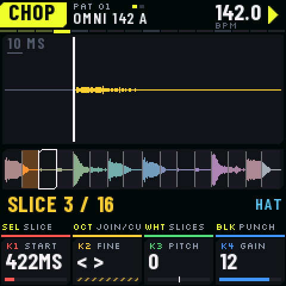
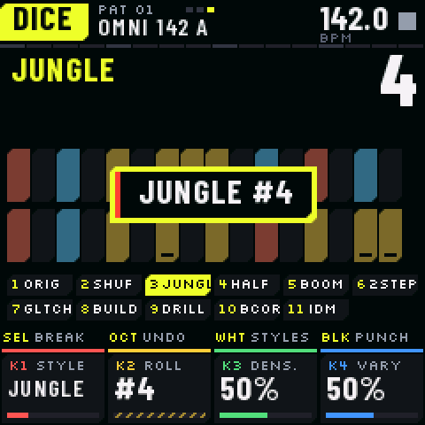
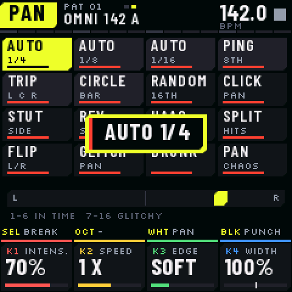
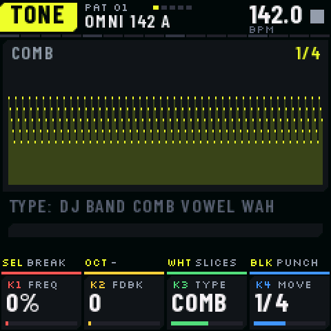

The manualLe manuel
Every page of BREAKR, every control. You can try everything in the emulator first: it runs the same firmware.Chaque page de BREAKR, chaque commande. Tu peux tout essayer d’abord dans l’émulateur : il fait tourner le même firmware.
The panelLe panneau
Each button opens a page; the same button again opens its next page (the small squares in the header). The bar ruler under the header lights the step that plays. The strip over the knobs says what SELECT, OCT, the white keys (WHT) and the black keys (BLK) do on this page. The four knobs are always KNOB 1 red, 2 yellow, 3 green, 4 blue, their name and value on the screen. Chaque bouton ouvre une page ; le même bouton encore ouvre sa page suivante (les petits carrés dans l’en-tête). La règle de mesure sous l’en-tête allume le pas qui joue. Le bandeau au-dessus des knobs dit ce que font SELECT, OCT, les touches blanches (WHT) et noires (BLK) sur cette page. Les quatre knobs sont toujours KNOB 1 rouge, 2 jaune, 3 vert, 4 bleu, leur nom et leur valeur à l’écran.
| ControlCommande | EverywherePartout |
|---|---|
| HOME | PLAY page. Held, it is SHIFT (below): the screen lists what it does; SELECT turns to the help of the page.Page PLAY. Tenu, c’est SHIFT (plus bas) : l’écran liste ce qu’il fait ; SELECT passe à l’aide de la page. |
| PLAY · REC | Start / stop the pattern. REC records what you play (slices, punch effects, glitch effects held).Lance / arrête le pattern. REC enregistre ce que tu joues (tranches, effets punch, effets glitch tenus). |
| ALGORITHM | The tempo, 40 to 300 BPM.Le tempo, de 40 à 300 BPM. |
| PRESETS | The pattern (16); while playing, the next one starts at the end of this one.Le pattern (16) ; en lecture, le suivant part à la fin de celui-ci. |
| Black keysTouches noires | 11 punch effects, held: REPEAT 1/4, 1/8, 1/16, ROLL, 6/8, REVERSE, OCTAVE −/+, UNISON, TRANCE 16 (a gate on every 16th), TRANCE 3-3-2 (a gate pattern). On the FX pages a window names the one you press. SHIFT + a black key latches it. Over a rest of the pattern a repeat plays the slice that rings there.11 effets punch, tenus : REPEAT 1/4, 1/8, 1/16, ROLL, 6/8, REVERSE, OCTAVE −/+, UNISON, TRANCE 16 (un gate à chaque double-croche), TRANCE 3-3-2 (un motif de gate). Sur les pages FX, une fenêtre nomme celui que tu appuies. SHIFT + une noire le verrouille. Sur un silence du pattern, un repeat rejoue la tranche qui y résonne. |

SHIFT · UNDOANNULER HOME HELDHOME TENU
Hold HOME: it is SHIFT. The screen lists what each control does with it, and what undo and redo would do now; the strip and the knob bar change with it, so what is written under a control is always what it does. Once you use SHIFT for something the list goes away and you see the page. A tap on HOME still opens PLAY. In the emulator: Shift on the keyboard. Tiens HOME : c’est SHIFT. L’écran liste ce que fait chaque commande avec, et ce qu’annuler et rétablir feraient maintenant ; le bandeau et la barre des knobs changent avec, donc ce qui est écrit sous une commande est toujours ce qu’elle fait. Dès que tu fais quelque chose avec SHIFT, la liste s’efface et tu vois la page. Un appui bref sur HOME ouvre toujours PLAY. Dans l’émulateur : Maj au clavier.
Undo keeps the last 16 edits of the patterns and of the slicing: steps, a recording, an erase, a generated pattern, a clear, a copy, the length, the rotate and the like, CHOP and SLICE. Turning a knob or holding a step is one edit, however many clicks. Nothing is lost by accident: what wipes a pattern is SHIFT + a button, and it can be undone; LOAD and NEW still ask twice. Annuler garde les 16 dernières modifications des patterns et du découpage : des pas, un enregistrement, une gomme, un pattern généré, un effacement, une copie, la longueur, décaler et compagnie, CHOP et SLICE. Tourner un knob ou tenir un pas compte pour une seule modification, quel que soit le nombre de crans. Rien ne se perd par accident : ce qui vide un pattern est SHIFT + un bouton, et s’annule ; CHARGER et NOUVEAU demandent toujours deux fois.

| SHIFT + | What it doesCe que ça fait |
|---|---|
| OCT− · OCT+ | undo · redo (16 edits; the toast says which)annuler · rétablir (16 modifications ; le message dit laquelle) |
| LFO | a new beat at once: the style of GENERATE (from ORIGINAL: one at random), the next rollun nouveau beat d’un coup : le style de GÉNÉRER (depuis ORIGINAL : un au hasard), le tirage suivant |
| SEQ | clear the patterneffacer le pattern |
| REC heldREC tenu | while it plays: the eraser, every step that goes by is clearedpendant la lecture : la gomme, chaque pas qui passe est effacé |
| PRESETS | copy this pattern to the next (or previous) one and go there: a variation in one turncopier ce pattern dans le suivant (ou le précédent) et y aller : une variation en un cran |
| FX | the master's effects off (filter, resonance, drive, crush, delay, punch); again: back as they werecouper les effets du master (filtre, résonance, drive, crush, delay, punch) ; encore : ils reviennent |
| a black keyune noire | latch its punch effect (a tap on it: let go)verrouiller son effet punch (un appui dessus : relâché) |
| ARP | let go of every effect: latches, flex, punchlâcher tous les effets : verrous, flex, punch |
| PLAY | everything stopstout s’arrête |
| ALGORITHM · SAVE · GLO | the tempo by 0.1 · save now (stopped) · the metronome off / when recording / onle tempo au 0,1 · sauver tout de suite (à l’arrêt) · le métronome off / en enregistrement / on |
| SELECT | the help of the page (and back)l’aide de la page (et retour) |
| On a pageSur une page | |
| STEPS · STEP+ | a white key: the pattern ends there (odd lengths in one press); K1 ROTATE, K2 HUMAN (left: back on the grid), K3 RATCHETS (a few hits drilled; left: none), K4 MIRRORune blanche : le pattern finit là (des longueurs impaires d’un appui) ; K1 DÉCALER, K2 HUMAIN (à gauche : sur la grille), K3 RATCHETS (quelques coups drillés ; à gauche : aucun), K4 MIROIR |
| BEAT · DESTROY | a white key: latch its effect, so both hands are free for the knobs (a tap on it: let go)une blanche : verrouiller son effet, les deux mains libres pour les knobs (un appui dessus : relâché) |
PLAY HOME
The break and its slices: white keys play slices 1–16 (OCT+ 17–32), the black keys punch. SELECT changes the break (stopped, the tempo follows it).Le break et ses tranches : les touches blanches jouent les tranches 1–16 (OCT+ 17–32), les noires frappent. SELECT change de break (à l’arrêt, le tempo le suit).
K1 PITCH · K2 FILTER · K3 CRUSH · K4 DICE
STEPS · STEP+ SEQ
16 steps on the white keys (OCT: steps 17–64). A tap puts the brush's slice (SELECT) or clears a step. Hold a step and turn: K1 slice, K2 pitch, K3 ratchet ×1…×16, K4 chance; hold a step and press a black key: a punch effect locked on it. 16 pas sur les touches blanches (OCT : pas 17–64). Un appui pose la tranche du pinceau (SELECT) ou vide un pas. Tiens un pas et tourne : K1 tranche, K2 hauteur, K3 ratchet ×1…×16, K4 chance ; tiens un pas et appuie sur une noire : un effet punch verrouillé dessus.
Without a step held: K1 length (1–64), K2 rate (1/16, 1/8, 1/32, triplets), K3 swing, K4 brush.Sans pas tenu : K1 longueur (1–64), K2 pas (1/16, 1/8, 1/32, triolets), K3 swing, K4 pinceau.
STEP+ SEQ ×2
Hold a step: K1 COND, K2 RAMP, K3 FX (none, a punch effect, or any of the 32 BEAT / DESTROY effects, for that step), K4 NUDGE (early / late). No step held: the knobs of STEPS. The whole pattern (rotate, humanize, ratchets, mirror) is SHIFT + the knobs, so a knob turned by mistake never rewrites it. Tiens un pas : K1 COND, K2 RAMPE, K3 FX (aucun, un effet punch, ou l’un des 32 effets BEAT / DESTROY, pour ce pas), K4 NUDGE (en avance / en retard). Sans pas tenu : les knobs de PAS. Le pattern entier (décaler, humaniser, ratchets, miroir) est SHIFT + les knobs : un knob tourné par erreur ne le réécrit jamais.
| COND | The step plays…Le pas joue… |
|---|---|
| A:B | on the A-th of every B loops of the pattern (1:2, 2:2, 1:3 … 4:4, 1:8, 8:8)à la A-ième de chaque série de B boucles du pattern (1:2, 2:2, 1:3 … 4:4, 1:8, 8:8) |
| FIRST · !FIRST | on the first loop only · on every loop but the firstà la première boucle seulement · à toutes sauf la première |
| PRE · !PRE | when the last conditional step played · when it did notsi le dernier pas conditionnel a joué · s’il n’a pas joué |
| RAMP | The ratchet's hits…Les coups du ratchet… |
| UP · DOWN | a semitone higher / lower eachun demi-ton plus haut / plus bas chacun |
| OCT UP · OCT DN | an octave up / down over the stepune octave en montant / en descendant sur le pas |
| RANDOM · FADE · REV ALT | random pitches · quieter and quieter · every other one backwardshauteurs au hasard · de plus en plus doux · un sur deux à l’envers |

SLICE · CHOP SCL · EDIT
SLICE: K1 MODE as is / grid / auto (on the hits), K2 grid count or auto sensitivity, K3 BARS (gives the break its tempo), K4 TEMPO: CHOP keeps the pitch, VARI follows the tempo. DÉCOUPE : K1 MODE tel quel / grille / auto (sur les frappes), K2 nombre de la grille ou sensibilité, K3 MESURES (donne son tempo au break), K4 TEMPO : CHOP garde la hauteur, VARI suit le tempo.
CHOP: one slice (SELECT or a key). K1 START, K2 FINE, K3 PITCH, K4 GAIN; EDIT again: reverse, class (kick, snare, hat, other). OCT+ splits it, OCT− joins it to the one before. CHOP : une tranche (SELECT ou une touche). K1 DÉBUT, K2 FIN, K3 HAUTEUR, K4 GAIN ; EDIT encore : envers, genre (kick, caisse claire, charleston, autre). OCT+ la coupe en deux, OCT− la joint à la précédente.

AMP ENV
K1 ATTACK, K2 DECAY (to HOLD), K3 LENGTH (how much of each slice), K4 CHOKE: MONO cuts the last slice (classic chopping), POLY lets it ring. AMP again: GATE (a key plays while held). K1 ATTAQUE, K2 DECAY (jusqu’à HOLD), K3 LONGUEUR (quelle part de chaque tranche), K4 CHOKE : MONO coupe la tranche d’avant (le chop classique), POLY la laisse résonner. AMP encore : GATE (une touche joue tant qu’elle est tenue).
DICE · GENERATE LFO
Page 1: on every step, the chance of another slice (of the same kind with SMART), backwards, a roll, a skip. Page 2: JUMPS (octaves, fifths), SMART, LOCK (the random repeats every 1, 2 or 4 bars), SEED. Page 1 : à chaque pas, la chance d’une autre tranche (du même genre avec SMART), à l’envers, d’un roll, d’un saut. Page 2 : SAUTS (octaves, quintes), SMART, LOCK (le hasard se répète toutes les 1, 2 ou 4 mesures), SEED.
Page 3, GENERATE: the white keys 1–11 are the styles: a press writes a new pattern in that style, the same key again another roll. Each click of a knob writes one too. K1 STYLE: ORIGINAL, SHUFFLE, JUNGLE, HALF, BOOM BAP, 2-STEP, GLITCH, BUILD UP, DRILL (drill'n'bass: climbing and falling ratchets, snare drills), BREAKCORE (four on the floor under amen edits, rolls, glitch locks), IDM (odd lengths, euclidean hits, conditions, micro-timing). K2 ROLL another one, K3 DENSITY, K4 VARY. OCT− or SHIFT + OCT−: undo. From any page, SHIFT + LFO: a new beat in this style. Page 3, GÉNÉRER : les touches blanches 1–11 sont les styles : un appui écrit un nouveau pattern dans ce style, la même touche encore un autre tirage. Chaque cran d’un knob en écrit un aussi. K1 STYLE : ORIGINAL, SHUFFLE, JUNGLE, HALF, BOOM BAP, 2-STEP, GLITCH, BUILD UP, DRILL (drill'n'bass : ratchets qui montent et descendent, drills de caisse claire), BREAKCORE (quatre-temps sous des edits d’amen, rolls, verrous glitch), IDM (longueurs impaires, frappes euclidiennes, conditions, micro-décalages). K2 TIRAGE un autre, K3 DENSITÉ, K4 VARIATION. OCT− ou SHIFT + OCT− : annuler. De n’importe quelle page, SHIFT + LFO : un nouveau beat dans ce style.

FLEX ARP
16 flex patterns on the white keys (half, double, tape, rewind, build, gates, triplet, juggle, roll, echo, swap, spin, drop, chop, slow). K1 MODE latch / hold / one bar, K2 QUANT step / beat / bar, K3 DEPTH, K4 PITCH. 16 patterns flex sur les touches blanches (half, double, tape, rewind, build, gates, triplet, juggle, roll, echo, swap, spin, drop, chop, slow). K1 MODE latch / hold / une mesure, K2 QUANT pas / temps / mesure, K3 PROFONDEUR, K4 PITCH.
PAN ARP ×2
16 effects that move the sound between the two sides, on the white keys: held, it plays; SHIFT + a key latches it (a tap lets it go). One at a time, the last pressed. It acts on everything that comes out, after the master, so it adds to a glitch effect, a flex pattern or a punch. K1 INTENSITY of the last one pressed (each its own), K2 SPEED ½× 1× 2×, K3 EDGE smooth to hard (clicks), K4 WIDTH of the whole output (0: mono, 200 %). 16 effets qui déplacent le son entre les deux côtés, sur les touches blanches : tenu, il joue ; SHIFT + une touche le verrouille (un appui le relâche). Un à la fois, le dernier appuyé. Il agit sur tout ce qui sort, après le master : il s’ajoute à un effet glitch, un flex ou un punch. K1 INTENSITÉ du dernier appuyé (chacun la sienne), K2 VITESSE ½× 1× 2×, K3 BORD doux à dur (clics), K4 LARGEUR de toute la sortie (0 : mono, 200 %).

| In time (1–6)Au tempo (1–6) | |
|---|---|
| AUTO 1/4 · 1/8 · 1/16 | a round trip left–right each beat, 8th, 16thun aller-retour gauche–droite par temps, croche, double |
| PING 8TH · TRIPLET L C R | left, right on the 8ths · left, middle, right on the 8th tripletsgauche, droite sur les croches · gauche, milieu, droite en triolets |
| CIRCLE | round in a bar; quieter when it passes behindun tour par mesure ; plus discret quand il passe derrière |
| Glitchy (7–16)Glitch (7–16) | |
| RANDOM 16TH · CLICK PAN | a place at random each 16th · from side to side at once each 32nd (64th past 50 %), with its clicksune place au hasard à chaque double · d’un côté à l’autre d’un coup à chaque triple croche (quadruple au-delà de 50 %), avec ses clics |
| STUT SIDE · REV SIDE | one side stutters the last 16th (the other side each beat) · one side plays the 16th before backwards (the other each bar)un côté bégaie la dernière double (l’autre côté chaque temps) · un côté joue la double d’avant à l’envers (l’autre chaque mesure) |
| HAAS JUMP · SPLIT HITS | one side a few ms late, jumping each 16th · the hits thrown left or right by a pattern a barun côté en retard de quelques ms, qui saute à chaque double · les frappes envoyées à gauche ou à droite, un motif par mesure |
| FLIP L/R · GLITCH PAN | left and right swapped, one side upside down · each 32nd hard left, hard right, the middle or nothinggauche et droite échangées, un côté inversé · à chaque triple croche tout à gauche, tout à droite, au milieu ou rien |
| DRUNK · PAN CHAOS | a stagger from place to place · a glitchy one at random each 16thune démarche d’ivrogne d’une place à l’autre · un effet glitch au hasard à chaque double |
FX · TONE · SPACE · DIRT FX ×1 · ×2 · ×5
TONE: K1 FILTER, K2 RESO, K3 TYPE: DJ (left low-pass, right high-pass, off in the middle), BAND (a band-pass), COMB (a metallic comb tuned by the knob, the resonance its feedback), VOWEL (two formants from A to U), WAH (a low-pass the hits open); K4 MOVE: the filter swept with the tempo (1/16, 1/8, 1/4, 1/2, a bar) or jumping at random each 16th or 8th. SPACE: K1 DELAY 1/16 … 1/2, K2 FEEDBACK, K3 MIX, K4 TYPE: CLEAN, DUB (a tape: wow, dark saturated repeats; at full feedback it runs away), PING (left, right; half a second at most), REVERSE (the echoes backwards), LO-FI (a phone line). DIRT (FX ×5): K1 DRIVE, K2 CRUSH, K3 PUNCH (a compressor), K4 LO-CUT (20–400 Hz). On every FX page a black key opens a window over the screen: the punch effect it plays, what it does, and the keys held. TONE : K1 FILTER, K2 RÉSO, K3 TYPE : DJ (à gauche passe-bas, à droite passe-haut, coupé au milieu), BAND (un passe-bande), COMB (un peigne métallique accordé par le knob, la résonance son retour), VOWEL (deux formants de A à U), WAH (un passe-bas que les frappes ouvrent) ; K4 MOVE : le filtre balayé au tempo (1/16, 1/8, 1/4, 1/2, une mesure) ou qui saute au hasard à chaque double ou croche. SPACE : K1 DELAY 1/16 … 1/2, K2 RETOUR, K3 MIX, K4 TYPE : CLEAN, DUB (une bande : pleurage, échos sombres et saturés ; au retour maximum il s’emballe), PING (gauche, droite ; une demi-seconde au plus), REVERSE (les échos à l’envers), LO-FI (un téléphone). DIRT (FX ×5) : K1 DRIVE, K2 CRUSH, K3 PUNCH (un compresseur), K4 LO-CUT (20–400 Hz). Sur chaque page FX, une touche noire ouvre une fenêtre sur l’écran : l’effet punch qu’elle joue, ce qu’il fait, et les touches tenues.

BEAT · DESTROY FX ×3 · ×4
K-GLITCH’s two banks, 16 effects each on the white keys: hold a key and it plays, on the bar; let go and it stops. The last key held wins. KNOB 1 is the intensity of the last one pressed (each has its own, saved with the project); KNOB 2–4: filter, drive, crush. REC while holding one writes it on the steps it plays over; STEP+ K3 locks one on a step. SHIFT + a white key latches its effect: it plays on with both hands free (a tap on it lets it go; SHIFT + ARP lets every effect go). Les deux banques de K-GLITCH, 16 effets chacune sur les touches blanches : tiens une touche et il joue, calé sur la mesure ; lâche, il s’arrête. La dernière tenue gagne. KNOB 1 règle l’intensité du dernier appuyé (chacun a la sienne, sauvée avec le projet) ; KNOB 2–4 : filtre, drive, crush. REC en tenant un effet l’écrit sur les pas qu’il traverse ; STEP+ K3 en verrouille un sur un pas. SHIFT + une blanche verrouille son effet : il continue, les deux mains libres (un appui dessus le relâche ; SHIFT + ARP relâche tout).

| BEAT | A program over the barUn programme sur la mesure |
|---|---|
| RND STUTTER · RND BAR · RND FILL | stutters on random 8ths · every 16th dry, repeated, backwards, muted, half speed or pitched · the end of the bar a random filldes stutters sur des croches au hasard · chaque double-croche sèche, répétée, à l’envers, coupée, ralentie ou transposée · la fin de la mesure en fill au hasard |
| ROLL UP · SKIP 8TH · STAMMER | the downbeat repeated faster and faster · the off-8ths dropped · 3-3-2, the hits repeatedle premier temps répété de plus en plus vite · les contretemps sautés · 3-3-2, les frappes répétées |
| GATE 8 · 16 · 3-3-2 · RAMP | trance gates; RAMP speeds up from quarters to 32ndsdes gates trance ; RAMP accélère des noires aux triples croches |
| REV BEAT · REV OFFBEAT | beats backwards · each off-8th the one before backwardsdes temps à l’envers · chaque contretemps la croche d’avant à l’envers |
| SCRATCH BAR · SCRATCH CUT | silence, three scratches, the downbeat backwards · beats 2 and 4 scratched under the faderun silence, trois scratches, le premier temps à l’envers · les temps 2 et 4 scratchés sous le fader |
| TAPE STOP · HALF TIME | the end of the bar slows to a stop · each beat played at half speedla fin de la mesure ralentit jusqu’à l’arrêt · chaque temps joué à mi-vitesse |
| DESTROY | IntensityIntensité |
| LOOP DESTROY | the bar cut in 1/2 … 1/32, looped; past 60 % passes backwards, past 85 % from random placesla mesure coupée en 1/2 … 1/32, bouclée ; au-delà de 60 % des passages à l’envers, de 85 % depuis des endroits au hasard |
| STUTTER X | 2, 3, 4, 8 repeats a beat, each fading; past 75 % random bursts2, 3, 4, 8 répétitions par temps, chacune plus douce ; au-delà de 75 % des rafales |
| GLITCH | bits and rate down, chunks of the past instead of now, noise bursts past 60 %bits et fréquence réduits, des morceaux du passé à la place du présent, bruit au-delà de 60 % |
| SCRATCH | a hand on the record: baby scratches, chirps, tears, transformers, scribblesune main sur le disque : baby scratches, chirps, tears, transformers, scribbles |
| REVERSE X | the last beat, 1/2 or 1/4 backwards, segment after segmentle dernier temps, 1/2 ou 1/4 à l’envers, segment après segment |
| PITCH MAD | a staircase up, random jumps, then a diveun escalier qui monte, des sauts au hasard, puis un plongeon |
| GATE X | silences each bar, 16ths or 32nds, more holesdes silences à chaque mesure, en doubles ou triples croches, plus de trous |
| FILTER CHAOS | a resonant low-pass jumping each 16thun passe-bas résonant qui saute à chaque double-croche |
| BEAT REPEAT | the last beat, 1/2, 1/4 repeated; past 70 % into a rollle dernier temps, 1/2, 1/4 répété ; au-delà de 70 % en roll |
| BEAT SKIP | 16ths dropped, or past 50 % the one before againdes doubles-croches sautées, ou au-delà de 50 % la précédente encore |
| MICRO STUTTER | 50 … 10 ms grains, a new one each 16thdes grains de 50 … 10 ms, un nouveau à chaque double-croche |
| TIME STRETCH | the groove at 3/4 … 1/4 speed, same pitchle groove à 3/4 … 1/4 de vitesse, même hauteur |
| RING MOD · FUZZ | a carrier 30 Hz … 2 kHz · drive ×1 … ×15une porteuse 30 Hz … 2 kHz · drive ×1 … ×15 |
| RANDOMIZER · TOTAL CHAOS | one of the above each 16th · the same, crushed and ring-modulatedl’un des précédents à chaque double-croche · pareil, écrasé et modulé en anneau |
GLOBAL GLO
K1 BPM, K2 SWING, K3 TEMPO (CHOP / VARI), K4 METRONOME; OCT+ taps the tempo. GLO again: CLOCK (internal / MIDI), LANGUAGE, THEME (WARP, RAVE, AMEN, PHOSPHOR, MONO, and SOFT: round boxes, slate, peach and lavender, easy on the eyes), VOLUME. K1 BPM, K2 SWING, K3 TEMPO (CHOP / VARI), K4 MÉTRONOME ; OCT+ tape le tempo. GLO encore : HORLOGE (interne / MIDI), LANGUE, THÈME (WARP, RAVE, AMEN, PHOSPHOR, MONO, et SOFT : coins ronds, ardoise, pêche et lavande, doux pour les yeux), VOLUME.
SAVE · RESAMPLE SAVE
K1 ACTION: SAVE, LOAD, CLEAR PAT, COPY PAT, NEW, RESAMPLE; SAVE again does it (LOAD, CLEAR and NEW ask twice). SELECT: the slot (AUTO, A, B, C). The white keys pick a pattern; hold one and press others: a chain. OCT−: undo. It saves itself when stopped. K1 ACTION : SAUVER, CHARGER, EFFACER, COPIER, NOUVEAU, RESAMPLE ; SAVE encore la fait (CHARGER, EFFACER et NOUVEAU demandent deux fois). SELECT : l’emplacement (AUTO, A, B, C). Les touches blanches choisissent un pattern ; tiens-en un et appuie sur d’autres : une chaîne. OCT− : annuler. Il sauve tout seul à l’arrêt.
RESAMPLE
K2 BARS: 1, 2 or 4. SAVE: from the next bar (the pattern starts if it was stopped), what comes out, effects and all, is recorded (22 kHz, up to 5.5 s), then the sequencer stops and the take becomes a new break of your bank, cut on the grid, its slices classed: RS 170 3 (its tempo and its place). SAVE again before the end: cancelled. K2 MESURES : 1, 2 ou 4. SAVE : à partir de la mesure suivante (le pattern démarre s’il était arrêté), ce qui sort, effets compris, est enregistré (22 kHz, jusqu’à 5,5 s), puis le séquenceur s’arrête et la prise devient un nouveau break de ta banque, découpé en grille, ses tranches classées : RS 170 3 (son tempo et sa place). SAVE encore avant la fin : annulé.

Your breaksTes breaks
- On the FM-1: RESAMPLE (above).Sur le FM-1 : RESAMPLE (ci-dessus).
- From a computer: the break editor in Chrome or Edge: drop loops, cut them, send them over USB.Depuis un ordinateur : l’éditeur de breaks dans Chrome ou Edge : dépose des boucles, découpe-les, envoie-les par USB.
- In the emulator: drop a loop (WAV, MP3, AIFF…) on its page: it is cut on its hits and added to your breaks.Dans l’émulateur : dépose une boucle (WAV, MP3, AIFF…) sur sa page : elle est découpée sur ses frappes et ajoutée à tes breaks.
- From an Android phone: the same page in Chrome, the FM-1 on a USB-C (OTG) data cable. iPhone and iPad have no Web MIDI.Depuis un téléphone Android : la même page dans Chrome, le FM-1 sur un câble de données USB-C (OTG). iPhone et iPad n’ont pas Web MIDI.
- 8 breaks at most, about 22 s at 22 kHz in all (more at 16 or 11 kHz). They come after the 8 factory breaks (SELECT).8 breaks au plus, environ 22 s à 22 kHz en tout (plus à 16 ou 11 kHz). Ils viennent après les 8 d’usine (SELECT).
MIDI
USB-MIDI in: notes play the slices, clock and start / stop follow (GLOBAL › CLOCK: MIDI). Out: the clock. The FM-1 also shows up as a USB audio input.USB-MIDI en entrée : les notes jouent les tranches, l’horloge et start / stop suivent (GLOBAL › HORLOGE : MIDI). En sortie : l’horloge. Le FM-1 apparaît aussi comme une entrée audio USB.
SafetySécurité
- Beta: built and checked for the FM-1 (size, memory, the update path against the real package, random sessions under sanitizers), not yet played on hardware.Bêta : compilé et vérifié pour le FM-1 (taille, mémoire, la mise à jour contre le vrai paquet, des sessions aléatoires sous sanitizers), pas encore joué sur le matériel.
- The installer checks the whole package before writing; a cut install resumes; an update never touches your projects and breaks.L’installeur vérifie tout le paquet avant d’écrire ; une installation coupée reprend ; une mise à jour ne touche jamais tes projets et tes breaks.
- Rescue: hold OCT− while switching on (USB rescue), then install again. Back to the stock firmware: M-VAVE’s M-UPGRADE.Secours : maintiens OCT− à l’allumage (secours USB), puis réinstalle. Retour au firmware d’origine : M-UPGRADE de M-VAVE.